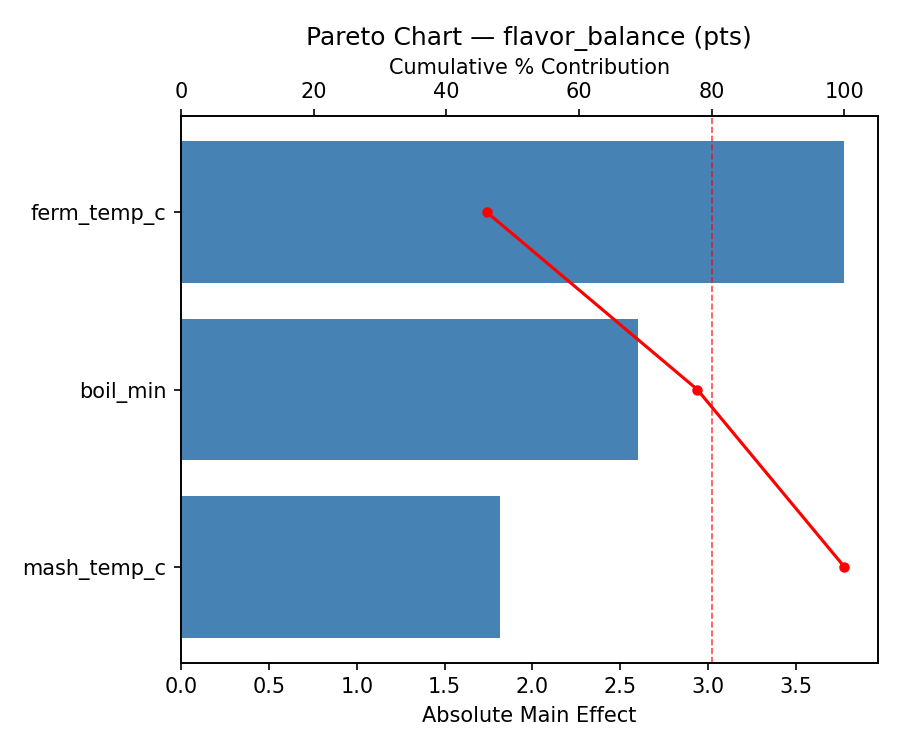
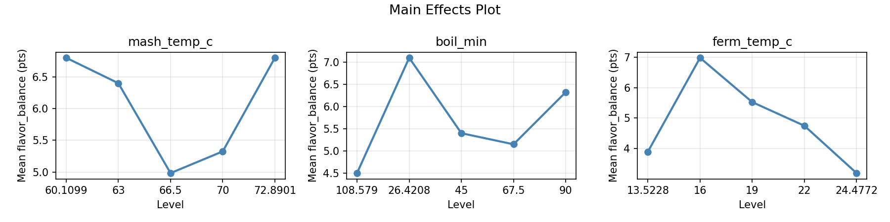
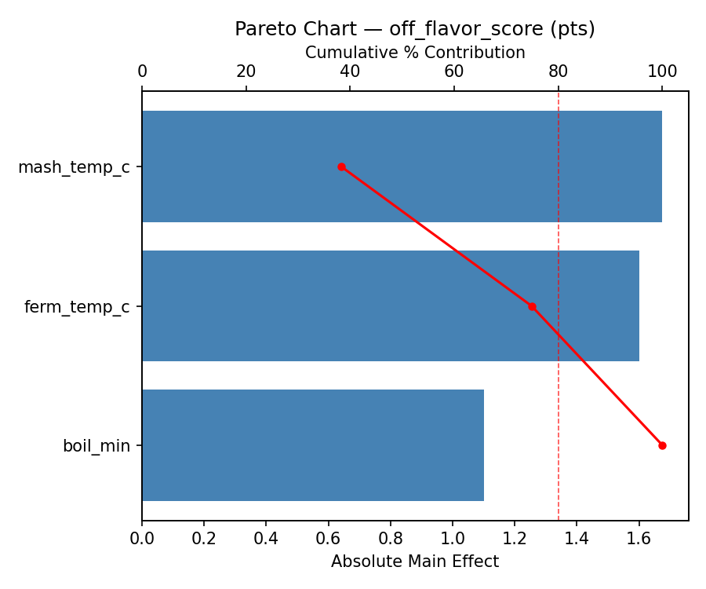
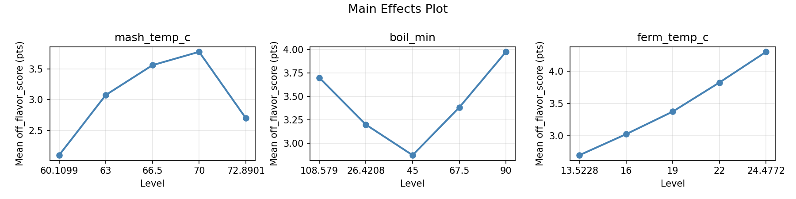
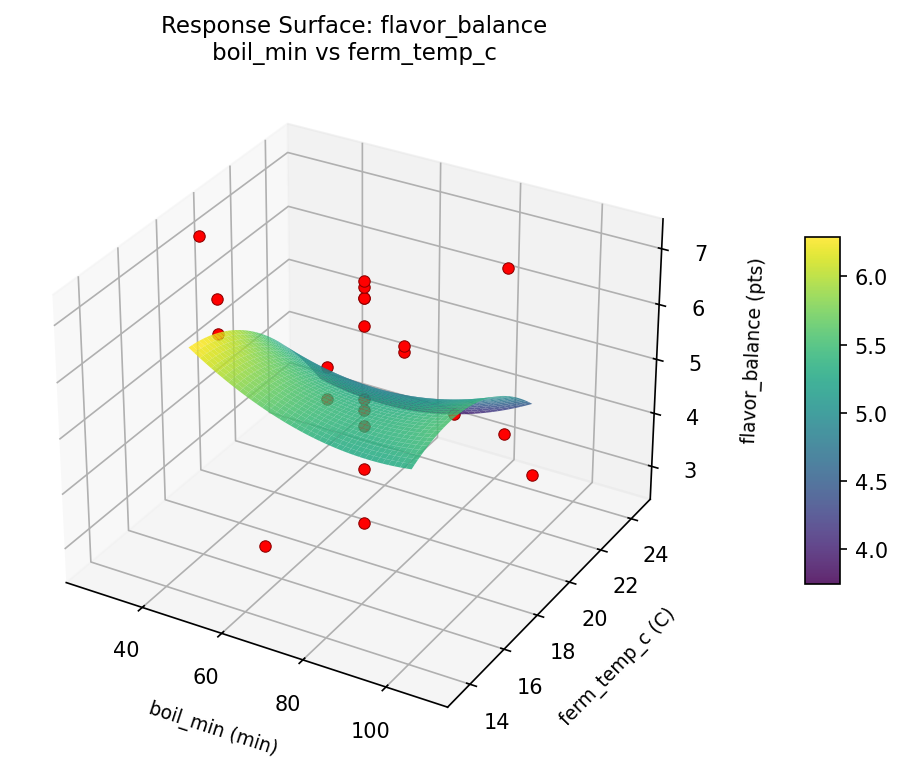
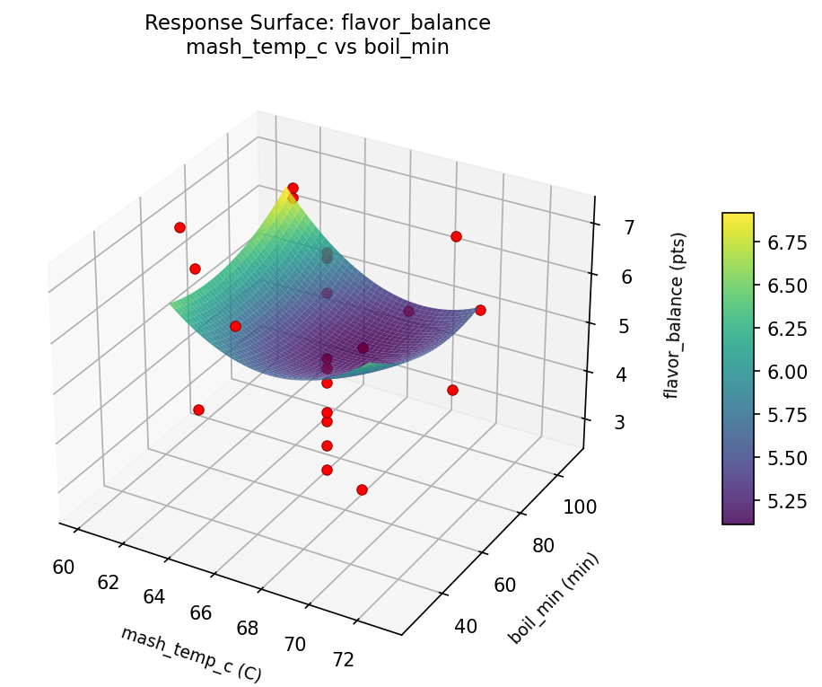
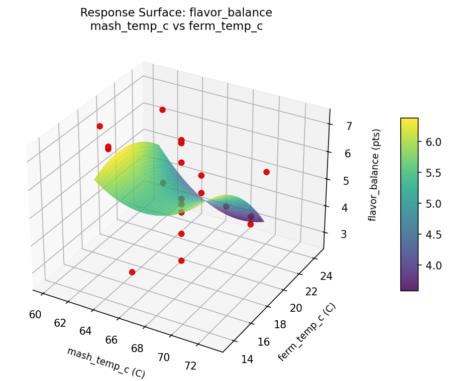
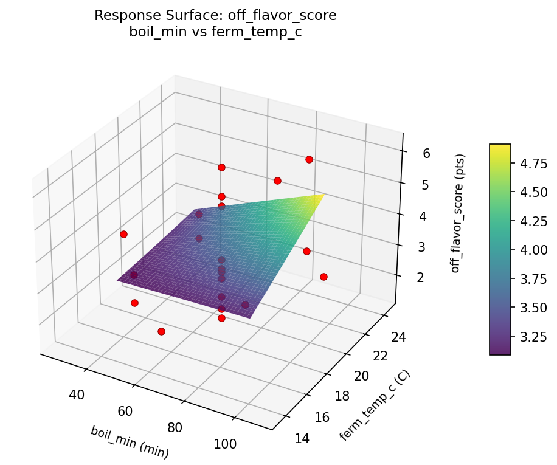
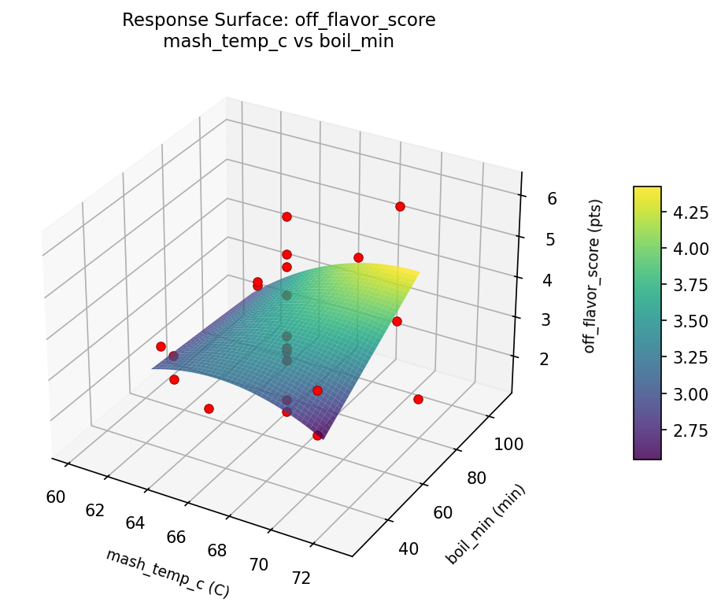
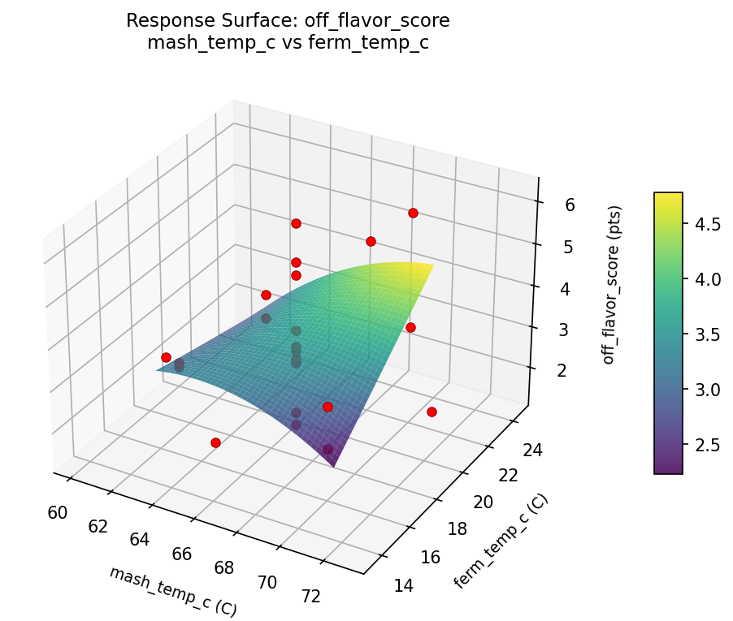

Summary
This experiment investigates home brewing beer. Central composite design to maximize flavor balance and minimize off-flavors by tuning mash temperature, boil duration, and fermentation temperature.
The design varies 3 factors: mash temp c (C), ranging from 63 to 70, boil min (min), ranging from 45 to 90, and ferm temp c (C), ranging from 16 to 22. The goal is to optimize 2 responses: flavor balance (pts) (maximize) and off flavor score (pts) (minimize). Fixed conditions held constant across all runs include yeast strain = US05, og target = 1.055.
A Central Composite Design (CCD) was selected to fit a full quadratic response surface model, including curvature and interaction effects. With 3 factors this produces 22 runs including center points and axial (star) points that extend beyond the factorial range.
Quadratic response surface models were fitted to capture potential curvature and factor interactions. The RSM contour plots below visualize how pairs of factors jointly affect each response.
Key Findings
For flavor balance, the most influential factors were ferm temp c (46.1%), boil min (31.7%), mash temp c (22.2%). The best observed value was 7.2 (at mash temp c = 66.5, boil min = 26.4208, ferm temp c = 19).
For off flavor score, the most influential factors were mash temp c (38.3%), ferm temp c (36.6%), boil min (25.1%). The best observed value was 1.4 (at mash temp c = 63, boil min = 90, ferm temp c = 16).
Recommended Next Steps
- Run confirmation experiments at the predicted optimal settings to validate the model.
- Consider whether any fixed factors should be varied in a future study.
Experimental Setup
Factors
| Factor | Low | High | Unit |
|---|
mash_temp_c | 63 | 70 | C |
boil_min | 45 | 90 | min |
ferm_temp_c | 16 | 22 | C |
Fixed: yeast_strain = US05, og_target = 1.055
Responses
| Response | Direction | Unit |
|---|
flavor_balance | ↑ maximize | pts |
off_flavor_score | ↓ minimize | pts |
Configuration
{
"metadata": {
"name": "Home Brewing Beer",
"description": "Central composite design to maximize flavor balance and minimize off-flavors by tuning mash temperature, boil duration, and fermentation temperature"
},
"factors": [
{
"name": "mash_temp_c",
"levels": [
"63",
"70"
],
"type": "continuous",
"unit": "C"
},
{
"name": "boil_min",
"levels": [
"45",
"90"
],
"type": "continuous",
"unit": "min"
},
{
"name": "ferm_temp_c",
"levels": [
"16",
"22"
],
"type": "continuous",
"unit": "C"
}
],
"fixed_factors": {
"yeast_strain": "US05",
"og_target": "1.055"
},
"responses": [
{
"name": "flavor_balance",
"optimize": "maximize",
"unit": "pts"
},
{
"name": "off_flavor_score",
"optimize": "minimize",
"unit": "pts"
}
],
"settings": {
"operation": "central_composite",
"test_script": "use_cases/142_home_brewing_beer/sim.sh"
}
}
Experimental Matrix
The Central Composite Design produces 22 runs. Each row is one experiment with specific factor settings.
| Run | mash_temp_c | boil_min | ferm_temp_c |
|---|
| 1 | 66.5 | 67.5 | 19 |
| 2 | 70 | 45 | 22 |
| 3 | 63 | 90 | 16 |
| 4 | 66.5 | 108.579 | 19 |
| 5 | 66.5 | 67.5 | 19 |
| 6 | 60.1099 | 67.5 | 19 |
| 7 | 66.5 | 67.5 | 13.5228 |
| 8 | 66.5 | 67.5 | 19 |
| 9 | 70 | 90 | 16 |
| 10 | 72.8901 | 67.5 | 19 |
| 11 | 66.5 | 67.5 | 19 |
| 12 | 66.5 | 26.4208 | 19 |
| 13 | 66.5 | 67.5 | 19 |
| 14 | 63 | 45 | 22 |
| 15 | 66.5 | 67.5 | 19 |
| 16 | 70 | 45 | 16 |
| 17 | 66.5 | 67.5 | 24.4772 |
| 18 | 70 | 90 | 22 |
| 19 | 66.5 | 67.5 | 19 |
| 20 | 63 | 45 | 16 |
| 21 | 63 | 90 | 22 |
| 22 | 66.5 | 67.5 | 19 |
Step-by-Step Workflow
1
Preview the design
$ python doe.py info --config use_cases/142_home_brewing_beer/config.json
2
Generate the runner script
$ python doe.py generate --config use_cases/142_home_brewing_beer/config.json \
--output use_cases/142_home_brewing_beer/results/run.sh --seed 42
3
Execute the experiments
$ bash use_cases/142_home_brewing_beer/results/run.sh
4
Analyze results
$ python doe.py analyze --config use_cases/142_home_brewing_beer/config.json
5
Get optimization recommendations
$ python doe.py optimize --config use_cases/142_home_brewing_beer/config.json
6
Generate the HTML report
$ python doe.py report --config use_cases/142_home_brewing_beer/config.json \
--output use_cases/142_home_brewing_beer/results/report.html
Features Exercised
| Feature | Value |
|---|
| Design type | central_composite |
| Factor types | continuous (all 3) |
| Arg style | double-dash |
| Responses | 2 (flavor_balance ↑, off_flavor_score ↓) |
| Total runs | 22 |
Analysis Results
Generated from actual experiment runs using the DOE Helper Tool.
Response: flavor_balance
Top factors: ferm_temp_c (46.1%), boil_min (31.7%), mash_temp_c (22.2%).
Pareto Chart

Main Effects Plot

Response: off_flavor_score
Top factors: mash_temp_c (38.3%), ferm_temp_c (36.6%), boil_min (25.1%).
Pareto Chart

Main Effects Plot

Response Surface Plots
3D surfaces fitted with quadratic RSM. Red dots are observed data points.
flavor balance boil min vs ferm temp c

flavor balance mash temp c vs boil min

flavor balance mash temp c vs ferm temp c

off flavor score boil min vs ferm temp c

off flavor score mash temp c vs boil min

off flavor score mash temp c vs ferm temp c

Full Analysis Output
RSM surface: rsm_flavor_balance_mash_temp_c_vs_boil_min.png
RSM surface: rsm_flavor_balance_mash_temp_c_vs_ferm_temp_c.png
RSM surface: rsm_flavor_balance_boil_min_vs_ferm_temp_c.png
RSM surface: rsm_off_flavor_score_mash_temp_c_vs_boil_min.png
RSM surface: rsm_off_flavor_score_mash_temp_c_vs_ferm_temp_c.png
RSM surface: rsm_off_flavor_score_boil_min_vs_ferm_temp_c.png
=== Main Effects: flavor_balance ===
Factor Effect Std Error % Contribution
--------------------------------------------------------------
ferm_temp_c 3.7750 0.3330 46.1%
boil_min 2.6000 0.3330 31.7%
mash_temp_c 1.8167 0.3330 22.2%
=== Summary Statistics: flavor_balance ===
mash_temp_c:
Level N Mean Std Min Max
------------------------------------------------------------
60.1099 1 6.8000 0.0000 6.8000 6.8000
63 4 6.4000 1.4024 4.3000 7.2000
66.5 12 4.9833 1.5514 2.7000 7.1000
70 4 5.3250 1.7251 3.7000 7.1000
72.8901 1 6.8000 0.0000 6.8000 6.8000
boil_min:
Level N Mean Std Min Max
------------------------------------------------------------
108.579 1 4.5000 0.0000 4.5000 4.5000
26.4208 1 7.1000 0.0000 7.1000 7.1000
45 4 5.4000 1.6533 3.7000 7.1000
67.5 12 5.1500 1.5963 2.7000 7.1000
90 4 6.3250 1.5521 4.0000 7.2000
ferm_temp_c:
Level N Mean Std Min Max
------------------------------------------------------------
13.5228 1 3.9000 0.0000 3.9000 3.9000
16 4 6.9750 0.3202 6.5000 7.2000
19 12 5.5250 1.5137 2.7000 7.1000
22 4 4.7500 1.5199 3.7000 7.0000
24.4772 1 3.2000 0.0000 3.2000 3.2000
=== Main Effects: off_flavor_score ===
Factor Effect Std Error % Contribution
--------------------------------------------------------------
mash_temp_c 1.6750 0.2720 38.3%
ferm_temp_c 1.6000 0.2720 36.6%
boil_min 1.1000 0.2720 25.1%
=== Summary Statistics: off_flavor_score ===
mash_temp_c:
Level N Mean Std Min Max
------------------------------------------------------------
60.1099 1 2.1000 0.0000 2.1000 2.1000
63 4 3.0750 0.3202 2.6000 3.3000
66.5 12 3.5583 1.4286 1.4000 6.2000
70 4 3.7750 1.6276 2.3000 6.1000
72.8901 1 2.7000 0.0000 2.7000 2.7000
boil_min:
Level N Mean Std Min Max
------------------------------------------------------------
108.579 1 3.7000 0.0000 3.7000 3.7000
26.4208 1 3.2000 0.0000 3.2000 3.2000
45 4 2.8750 0.5123 2.3000 3.4000
67.5 12 3.3833 1.5014 1.4000 6.2000
90 4 3.9750 1.4175 3.2000 6.1000
ferm_temp_c:
Level N Mean Std Min Max
------------------------------------------------------------
13.5228 1 2.7000 0.0000 2.7000 2.7000
16 4 3.0250 0.4856 2.3000 3.3000
19 12 3.3750 1.4654 1.4000 6.2000
22 4 3.8250 1.5543 2.6000 6.1000
24.4772 1 4.3000 0.0000 4.3000 4.3000
Pareto chart (flavor_balance): use_cases/142_home_brewing_beer/results/analysis/pareto_flavor_balance.png
Pareto chart (off_flavor_score): use_cases/142_home_brewing_beer/results/analysis/pareto_off_flavor_score.png
Main effects (flavor_balance): use_cases/142_home_brewing_beer/results/analysis/main_effects_flavor_balance.png
Main effects (off_flavor_score): use_cases/142_home_brewing_beer/results/analysis/main_effects_off_flavor_score.png
Optimization Recommendations
=== Optimization: flavor_balance ===
Direction: maximize
Best observed run: #13
mash_temp_c = 66.5
boil_min = 26.4208
ferm_temp_c = 19
Value: 7.2
RSM Model (linear, R² = 0.1668, Adj R² = 0.0279):
Coefficients:
intercept +5.4682
mash_temp_c +0.5718
boil_min -0.3198
ferm_temp_c -0.3915
RSM Model (quadratic, R² = 0.3842, Adj R² = -0.0777):
Coefficients:
intercept +5.7590
mash_temp_c +0.5718
boil_min -0.3198
ferm_temp_c -0.3915
mash_temp_c*boil_min +0.5625
mash_temp_c*ferm_temp_c +0.7625
boil_min*ferm_temp_c -0.2125
mash_temp_c^2 -0.4204
boil_min^2 -0.0154
ferm_temp_c^2 -0.0004
Curvature analysis:
mash_temp_c coef=-0.4204 concave (has a maximum)
boil_min coef=-0.0154 negligible curvature
ferm_temp_c coef=-0.0004 negligible curvature
Notable interactions:
mash_temp_c*ferm_temp_c coef=+0.7625 (synergistic)
mash_temp_c*boil_min coef=+0.5625 (synergistic)
Predicted optimum (from linear model):
mash_temp_c = 70
boil_min = 45
ferm_temp_c = 16
Predicted value: 6.7513
Model quality: Weak fit — consider adding center points or using a different design.
Factor importance:
1. boil_min (effect: 3.5, contribution: 36.2%)
2. ferm_temp_c (effect: 3.2, contribution: 33.1%)
3. mash_temp_c (effect: 3.0, contribution: 30.7%)
=== Optimization: off_flavor_score ===
Direction: minimize
Best observed run: #7
mash_temp_c = 63
boil_min = 90
ferm_temp_c = 16
Value: 1.4
RSM Model (linear, R² = 0.1659, Adj R² = 0.0269):
Coefficients:
intercept +3.4045
mash_temp_c -0.1805
boil_min -0.5944
ferm_temp_c +0.0264
RSM Model (quadratic, R² = 0.4784, Adj R² = 0.0873):
Coefficients:
intercept +3.6848
mash_temp_c -0.1805
boil_min -0.5944
ferm_temp_c +0.0264
mash_temp_c*boil_min -0.0125
mash_temp_c*ferm_temp_c -1.0875
boil_min*ferm_temp_c -0.0625
mash_temp_c^2 -0.1701
boil_min^2 -0.0651
ferm_temp_c^2 -0.1851
Curvature analysis:
ferm_temp_c coef=-0.1851 concave (has a maximum)
mash_temp_c coef=-0.1701 concave (has a maximum)
boil_min coef=-0.0651 negligible curvature
Notable interactions:
mash_temp_c*ferm_temp_c coef=-1.0875 (antagonistic)
Predicted optimum (from quadratic model):
mash_temp_c = 63
boil_min = 45
ferm_temp_c = 22
Predicted value: 5.2032
Model quality: Weak fit — consider adding center points or using a different design.
Factor importance:
1. mash_temp_c (effect: 2.6, contribution: 46.0%)
2. boil_min (effect: 2.2, contribution: 39.4%)
3. ferm_temp_c (effect: 0.8, contribution: 14.6%)